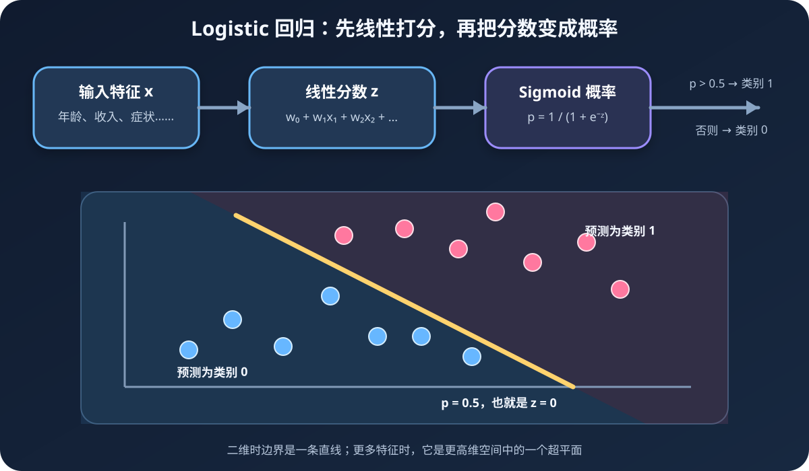
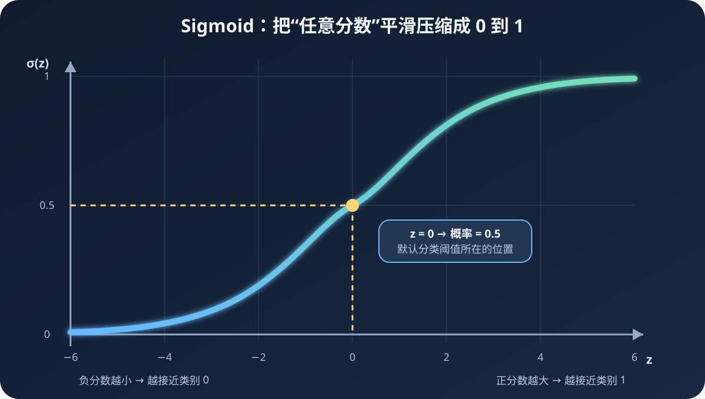

假设你要判断一名学生能否通过考试。学习时间越长，通过的可能性通常越大，但现实不是“学 3.9 小时一定挂科、4 小时突然 100% 通过”。我们更希望模型给出“通过概率 82%”这样的平滑判断，再用一个阈值把概率变成类别。Logistic 回归正是为这种任务设计的。
读完你会做到
- 理解 Logistic 回归为什么是分类算法
- 看懂 Sigmoid、线性分数、概率和决策边界的关系
- 从零实现批量与随机梯度训练
- 正确解读准确率、阈值、损失函数和病马测试结果
一、Logistic 回归到底在做什么
Logistic 回归（Logistic Regression）是一种监督学习算法。它最常用于二分类，也就是答案只有两类的问题，例如：
- 邮件是垃圾邮件还是正常邮件。
- 顾客会购买还是不会购买。
- 患者有病还是无病。
- 一匹病马最终存活还是死亡。
它不直接从特征跳到类别，而是分成三步：
- 把每个特征乘上一个权重，再全部相加，得到线性分数
z。 - 用 Sigmoid 函数把任意大小的
z压缩到 0 和 1 之间。 - 把结果解释为类别 1 的估计概率，再用阈值完成分类。

二、为什么名字叫“回归”却用来分类
“回归”来自它对特征做的线性组合，形式与线性回归很像：
z = w₀ + w₁x₁ + w₂x₂ + … + wₙxₙ
其中：
x₁、x₂……是输入特征，例如学习时间、出勤率。w₁、w₂……是模型要从数据中学到的权重。w₀是截距，也叫偏置项。z是还没有变成概率的原始分数。
线性回归会直接把 z 当作预测值，因此可能输出 −3 或 7.5；概率却必须在 0 到 1 之间。Logistic 回归在后面接上 Sigmoid，把线性分数变成概率，所以最终解决的是分类问题。
三、Sigmoid 函数：概率转换器
Sigmoid 也叫 Logistic 函数，公式是：
σ(z) = 1 ÷ (1 + e⁻ᶻ)
看似复杂，实际只需记住三个性质：
- 输入
z = 0时，输出正好是0.5。 z越大，输出越接近1。z越小，输出越接近0。

用第五章代码实际观察
import numpy as np
def sigmoid(value):
safe_value = np.clip(value, -500, 500)
return 1.0 / (1.0 + np.exp(-safe_value))
test_values = np.array([-10.0, -2.0, 0.0, 2.0, 10.0])
print(sigmoid(test_values))实际输出：
[0.0000454, 0.1192029, 0.5, 0.8807971, 0.9999546]np.clip 把极端输入限制在 −500 到 500。数学上，极大的正负数本来就会让 Sigmoid 无限接近 1 或 0；限制范围只是避免计算 exp 时溢出，不会实质改变分类结果。
四、亲手完成一次概率分类
假设模型使用两个特征：
x₁：每天学习小时数。x₂：出勤率，为了演示先写成 0 到 10 的分数。
训练得到的权重假设为 w₀ = −6、w₁ = 0.8、w₂ = 0.5。某位学生每天学习 5 小时、出勤分数 8：
z = −6 + 0.8 × 5 + 0.5 × 8 = 2
再送入 Sigmoid：
p = σ(2) ≈ 0.881
模型估计他属于类别 1，也就是“通过”的概率约为 88.1%。若阈值为 0.5，因为 0.881 > 0.5，最终预测为通过。
特征 → 加权求和得到 z → Sigmoid 得到概率 p → 与阈值比较得到类别。
五、决策边界为什么是一条直线
默认阈值为 0.5，而 σ(0) = 0.5，因此分类边界满足：
w₀ + w₁x₁ + w₂x₂ = 0
解出 x₂：
x₂ = (−w₀ − w₁x₁) ÷ w₂
这就是二维平面上的直线。线的一边 z > 0，概率大于 0.5；另一边 z < 0，概率小于 0.5。特征更多时，它会变成高维空间里的一个超平面。
六、模型怎样学会权重
一开始，代码把权重全部设为 1。这个初始模型大概率预测不准，于是要反复执行：
- 01前向计算
用当前权重计算每个样本的分数和预测概率。
- 02比较答案
用真实标签减去预测概率，得到误差方向和大小。
- 03计算梯度
判断每个权重应当向哪个方向调整，调整多少。
- 04更新权重
按学习率迈出一小步，然后重新计算。
第五章使用梯度上升，目标是让训练数据的对数似然越来越大：
weights ← weights + 学习率 × Xᵀ × (真实标签 − 预测概率)
七、对数似然和交叉熵是什么
模型需要一个总分来衡量当前权重好不好。对单个样本而言：
- 真实标签为 1 时，希望预测概率
p越接近 1 越好。 - 真实标签为 0 时，希望
1 − p越接近 1 越好。
把两种情况写在一起，单样本似然是：
P(y | x) = pʸ × (1 − p)¹⁻ʸ
训练时希望所有样本似然的乘积尽量大。为了避免小概率连乘造成数值问题，也为了把乘法变成加法，通常取对数：
对数似然 = Σ [y log(p) + (1 − y) log(1 − p)]
第五章的“梯度上升”是在最大化对数似然。现代库常说“梯度下降最小化二元交叉熵”，其中：
二元交叉熵 = −对数似然
一个加负号后最大化，另一个最小化，本质是同一件事。不要被“上升”和“下降”两个名字误导。
八、从零实现批量梯度上升
批量方法每一轮都用全部训练样本计算一次更新。第五章已经为 NumPy 2 做了兼容：旧代码里的 np.mat 已移除，改用普通数组和 @ 做矩阵乘法。
import numpy as np
def gradient_ascent(features, labels, learning_rate=0.001, epochs=500):
X = np.asarray(features, dtype=float)
y = np.asarray(labels, dtype=float)
weights = np.ones(X.shape[1])
for _ in range(epochs):
probabilities = sigmoid(X @ weights)
errors = y - probabilities
gradient = X.T @ errors
weights = weights + learning_rate * gradient
return weights四句核心代码
X @ weights：所有样本分别完成加权求和，得到一列线性分数。sigmoid(...)：把所有分数转换成类别 1 的预测概率。y - probabilities：真实值减预测值。真实为 1 但概率太低时，误差为正；真实为 0 但概率太高时，误差为负。X.T @ errors：汇总全部样本对每个权重的修正意见。
九、截距项为什么要在每行前加 1
第五章读取二维数据时，每个样本保存成：
sample = [1.0, feature_1, feature_2]前面的 1.0 与权重 w₀ 相乘后仍是 w₀，因此可以把截距放进同一次矩阵乘法：
w₀ × 1 + w₁x₁ + w₂x₂
如果没有截距，分类直线会被强制经过原点。加入它相当于给边界增加一个可以平移的旋钮。
十、二维数据实际训练结果
第五章的 testSet.txt 包含 100 个二维样本。使用学习率 0.001、训练 500 轮后，批量梯度上升实际得到：
训练得到的权重：[4.12414349, 0.48007329, -0.61684820]
训练样本数量：100
训练集分类准确率：0.96对应的分类边界是：
x₂ = (−4.1241 − 0.4801x₁) ÷ (−0.6168)
96% 是训练集准确率，不是测试准确率。它说明模型能用一条直线较好地拟合这 100 个已见样本，但不能单独证明遇到新数据也有 96% 准确率。评价泛化能力必须保留独立测试集或使用交叉验证。
十一、批量与随机梯度有什么区别
批量梯度
每次更新前查看全部样本，方向较稳定，但数据很大时每一步计算较慢。适合小数据和理解矩阵公式。
随机梯度
每看一个样本就立即更新，单步快、能在线学习，但更新轨迹会抖动，结果受样本顺序影响。
基础随机梯度只按固定顺序扫一遍数据：
def stochastic_gradient_once(X, y, learning_rate=0.01):
weights = np.ones(X.shape[1])
for index in range(len(X)):
probability = sigmoid(np.sum(X[index] * weights))
error = y[index] - probability
weights += learning_rate * error * X[index]
return weights实际运行时，基础方法训练集准确率只有 72%。第五章的改进版本做了三件事：
- 训练多轮，而不是只遍历一次。
- 学习率随训练逐渐减小，前期走大步，后期精细调整。
- 每轮随机抽取尚未使用的样本，减弱固定顺序造成的周期性影响。
def improved_stochastic_gradient(X, y, epochs=150):
weights = np.ones(X.shape[1])
for epoch in range(epochs):
remaining_indices = list(range(len(X)))
for step in range(len(X)):
learning_rate = 4 / (1.0 + epoch + step) + 0.0001
random_position = int(np.random.uniform(0, len(remaining_indices)))
sample_index = remaining_indices[random_position]
probability = sigmoid(np.sum(X[sample_index] * weights))
error = y[sample_index] - probability
weights += learning_rate * error * X[sample_index]
del remaining_indices[random_position]
return weights固定随机种子为 0 后，改进版本实际训练准确率为 95%。它略低于批量方法的 96%，并不表示算法一定更差；两种训练策略、轮数和学习率不同，而且这里只比较训练集。
十二、怎样把概率变成类别
def classify(sample, weights, threshold=0.5):
probability = sigmoid(np.sum(sample * weights))
return 1 if probability > threshold else 00.5 只是常用默认值，不是自然界规定的标准。阈值决定两类错误之间的权衡：
降低阈值
更多样本会被判为类别 1，通常提高召回率，但也会带来更多假阳性。例如疾病筛查时宁愿多做复查，也不想漏掉患者。
提高阈值
只有概率很高才判为类别 1，通常提高精确率，但可能漏掉更多真正的类别 1。例如昂贵干预前需要更高把握。
选择阈值时要看业务代价，并结合混淆矩阵、精确率、召回率、F1、ROC-AUC 或 PR-AUC，而不是永远固定 0.5。
十三、实战：预测病马生存结果
第五章使用两个配套文件：
horseColicTraining.txt：训练数据。horseColicTest.txt：测试数据。
每个样本读取前 21 列作为特征，第 22 列作为标签。模型使用改进随机梯度上升训练 1000 轮，再逐条预测测试集：
weights = improved_stochastic_gradient(
np.array(training_features),
training_labels,
epochs=1000,
)
errors = 0
for features, true_label in zip(test_features, test_labels):
prediction = classify(np.array(features), weights)
if prediction != true_label:
errors += 1
error_rate = errors / len(test_labels)固定随机种子后，单次实际结果为：
the error rate of this test is: 0.447761随机梯度的抽样顺序会影响最终权重，因此第五章又重复测试 10 次。实际错误率依次约为：
44.78%, 37.31%, 25.37%, 37.31%, 26.87%,
41.79%, 28.36%, 34.33%, 29.85%, 31.34%
10 次平均错误率：33.73%这里最值得学的不是“33.73% 好不好”，而是：
- 随机训练确实会产生波动，单次结果不能代表稳定性能。
- 平均多次随机运行比只挑最好的一次更诚实。
- 固定随机种子让实验可复现，但不会自动让实验设计变得严谨。
- 医疗相关任务不能只看错误率，还要区分漏判和误判。
十四、用 scikit-learn 完成正规流程
真实项目建议使用成熟实现，并把标准化与模型放进同一个 Pipeline。标准化能避免数值范围大的特征在优化过程中主导更新，也能让正则化更公平地作用于各个权重。
from sklearn.linear_model import LogisticRegression
from sklearn.metrics import classification_report, confusion_matrix, roc_auc_score
from sklearn.model_selection import train_test_split
from sklearn.pipeline import make_pipeline
from sklearn.preprocessing import StandardScaler
X_train, X_test, y_train, y_test = train_test_split(
X,
y,
test_size=0.2,
random_state=42,
stratify=y,
)
model = make_pipeline(
StandardScaler(),
LogisticRegression(
C=1.0,
max_iter=2000,
random_state=42,
),
)
model.fit(X_train, y_train)
predictions = model.predict(X_test)
probabilities = model.predict_proba(X_test)[:, 1]
print(confusion_matrix(y_test, predictions))
print(classification_report(y_test, predictions))
print("ROC-AUC:", roc_auc_score(y_test, probabilities))predict 给出最终类别，predict_proba 给出概率。评估排序能力时要使用概率，而不是已经被阈值切成 0/1 的结果。
十五、正则化：防止权重过度膨胀
特征很多、数据较少或特征高度相关时，模型可能学出绝对值很大的权重，对训练数据变化非常敏感。正则化会对大权重增加代价：
- L2 正则化：让权重整体更平滑，是 scikit-learn 的常见默认选择。
- L1 正则化：可能把部分权重压到 0，可用于稀疏特征选择。
在 scikit-learn 中，C 是正则化强度的倒数：C 越小，约束越强；C 越大，约束越弱。应使用交叉验证选择，而不是凭感觉把它设得极大。
十六、系数能怎样解释
Logistic 回归的线性分数也叫对数几率（log-odds）：
log[p ÷ (1 − p)] = w₀ + w₁x₁ + … + wₙxₙ
在其他特征不变时，xᵢ 增加 1，会让对数几率增加 wᵢ；对应的几率会乘以 eʷⁱ。不过要谨慎：
- 系数正负表示预测关联方向，不自动代表因果关系。
- 特征单位不同，系数大小不能直接横向比较。
- 特征相关时，单个系数可能不稳定。
- 概率变化不是固定的，它还取决于样本当前位于 Sigmoid 曲线的哪个位置。
十七、Logistic 回归的优点与局限
它为什么常被当作基线
- 训练和预测速度快，适合大规模稀疏数据
- 直接输出概率，方便调整分类阈值
- 加入正则化后通常比较稳定
- 线性关系下系数相对容易解释
什么时候要谨慎
- 默认只能学习线性决策边界
- 对异常值和特征尺度较敏感
- 严重类别不平衡时，准确率和0.5阈值可能误导
- 强相关特征会让系数解释不稳定
十八、新手最常踩的 8 个坑
- 因为名字里有“回归”就把它当连续值预测。基础 Logistic 回归的主要用途是分类和概率估计。
- 忘记截距。分类边界被强制经过原点，表达能力无端受限。
- 直接计算极端指数。
exp可能溢出，应使用稳定实现或成熟库。 - 特征尺度相差巨大却不标准化。优化会变慢，正则化对各特征也不公平。
- 只看训练准确率。训练集表现不能代替独立测试或交叉验证。
- 永远使用 0.5 阈值。阈值应结合类别比例和错误代价选择。
- 把概率当作天然可靠的置信度。概率可能需要用独立数据检查校准情况。
- 把系数解释成因果效应。预测关联不等于“这个特征导致了结果”。
十九、完成自己的 Logistic 分类项目
- 01定义正类
明确标签 1 代表什么，以及漏判、误判分别有什么代价。
- 02划分数据
在任何调参和预处理拟合之前保留测试集，分类时尽量分层抽样。
- 03处理特征
处理缺失值、类别编码和异常值，并只在训练数据上拟合标准化器。
- 04训练基线
先使用带 L2 正则化的 Logistic 回归，检查是否收敛。
- 05多指标评价
同时查看混淆矩阵、精确率、召回率、F1 和概率指标。
- 06选择阈值
在验证数据上按实际代价调整阈值，不要用测试集反复试。
- 07解释与记录
记录特征单位、系数、版本、随机种子和数据划分方式。
最后，把 Logistic 回归记成五个词
特征加权概率阈值更新
模型把输入特征乘以各自权重并相加，用 Sigmoid 把加权分数变成类别 1 的概率，再与阈值比较得到类别；训练则根据真实答案反复更新权重。
建议你接下来把二维数据的学习率从 0.001 改成 0.0001、0.01、0.1，同时记录对数损失和训练准确率，而不只是看最终权重。你会直观看到：步子太小收敛很慢，步子太大可能震荡；理解这个现象，就理解了梯度方法最核心的训练节奏。